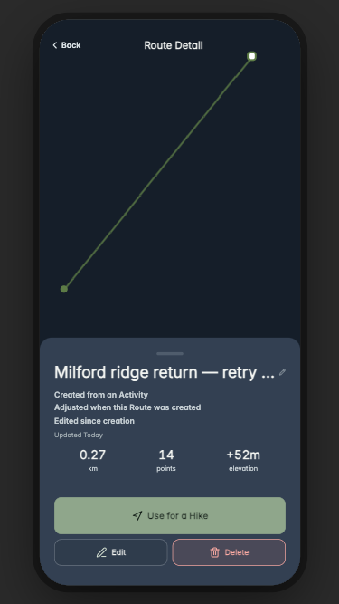
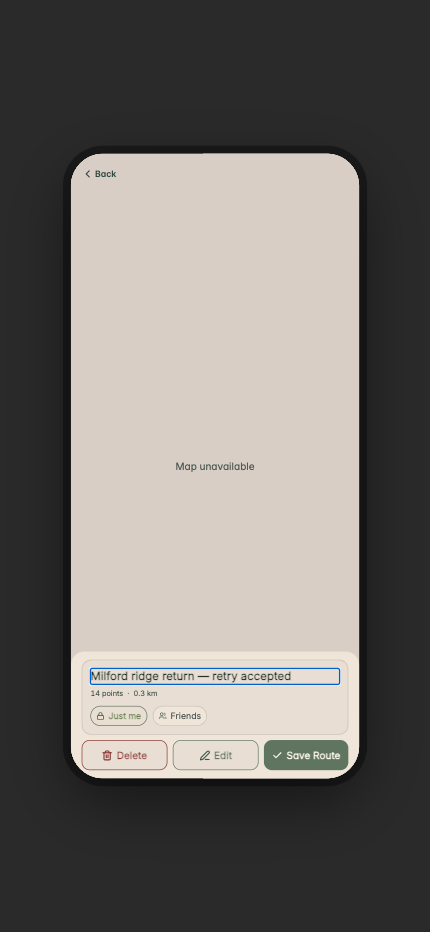

Own Route Detail / Editor / Use · ROUTE-01
Evidence boundary: Current source rendered in Expo Web with synthetic disposable fixtures. All API operations were fulfilled inside Playwright and every external request was blocked. Activity → Save as Route, Trails reopen, existing edit/save, Hike selection, Run selection, and failed save used actual UI handlers. Map services were blocked, so editor map fallback and non-native route rendering are visible; this is not native Mapbox, physical-device, touch, GPS, haptics, accessibility, keyboard, deployment, or owner-acceptance proof. The before captures came from the attributable 20260916T131638+0800 current-source audit and are historical baselines, not candidate references.
Offline-readable boards


Referenced captures

activity-derived-draft-map-unavailable · day · 390x844
NORMAL_ACTIVITY_HANDLER
Synthetic Activity was injected; Save as Route and editor entry used actual handlers.

draft-applied-awaiting-save · day · 390x844
NORMAL_EDITOR_APPLY_HANDLER
Apply changed only the editor draft; no Route was committed at this capture.

activity-derived-synced · day · 390x844
NORMAL_EDITOR_SAVE_HANDLER
Actual local-first create handler; POST was fulfilled by isolated modern-origin fixture server.

route-retrieved-by-stable-identity · day · 390x844
NORMAL_HOME_AND_TRAILS_HANDLERS
Actual Trails route tab and local/server identity merge.

trails-reopened-origin · sunset · 390x844
NORMAL_TRAILS_ROW_HANDLER
Same stable Route reopened from Trails through actual row handler.

existing-unsaved-edit · night · 390x844
NORMAL_DETAIL_EDIT_HANDLER
Actual existing editor; saved Route is unchanged while this independent draft is open.

edited-since-creation · night · 390x844
NORMAL_EDITOR_SAVE_HANDLER
PUT acknowledged by isolated fixture; original Activity and origin fields were not rewritten.

delete-confirmation-non-cascade · day · 390x844
NORMAL_DETAIL_DELETE_OPEN_HANDLER
Shared confirmation rendered; Delete Route was not invoked.

use-route-mode-picker · day · 390x844
NORMAL_DETAIL_USE_HANDLER
Actual mode picker; no recording starts from this surface.

selected-route-no-auto-start · day · 390x844
NORMAL_USE_ROUTE_HIKE_HANDLER
Actual Hike pre-start with selected stable Route; Start was not pressed.

selected-route-no-auto-start · night · 390x844
NORMAL_USE_ROUTE_RUN_HANDLER
Actual Run pre-start with selected stable Route; Start was not pressed.

failed-save-retains-draft · sunset · 390x844
NORMAL_EDITOR_SAVE_HANDLER_WITH_FIXTURE_503
Actual PUT returned isolated 503; editor remained open with the intended draft.

local-pending-planned-gap-connection · day · 390x844
FORCED_FIXTURE_ROUTE
Injected pending Route with explicit Route-only connection provenance; not a map gesture proof.

legacy-unknown-origin · day · 390x844
FORCED_FIXTURE_ROUTE
Injected legacy Route intentionally carries no inferred historical origin.

small-web-long-name · night · 375x667
FORCED_FIXTURE_ROUTE
375x667 browser constraint check for the actual Detail implementation.

large-web-focused-name · sunset · 430x932
FORCED_FIXTURE_ROUTE
430x932 browser constraint with the actual editor name field focused.